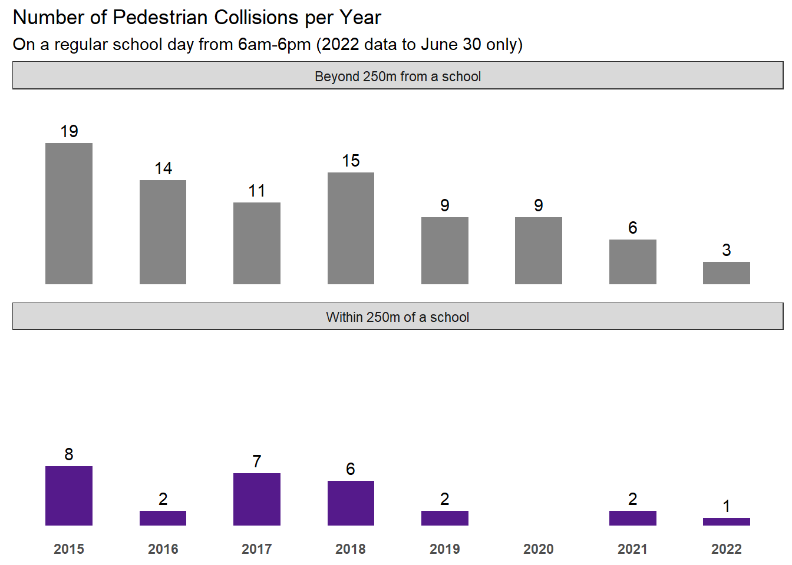
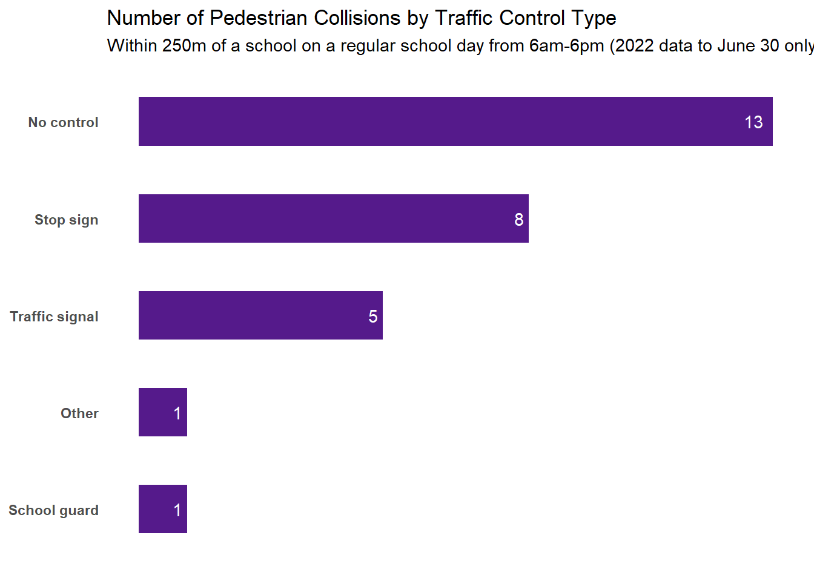
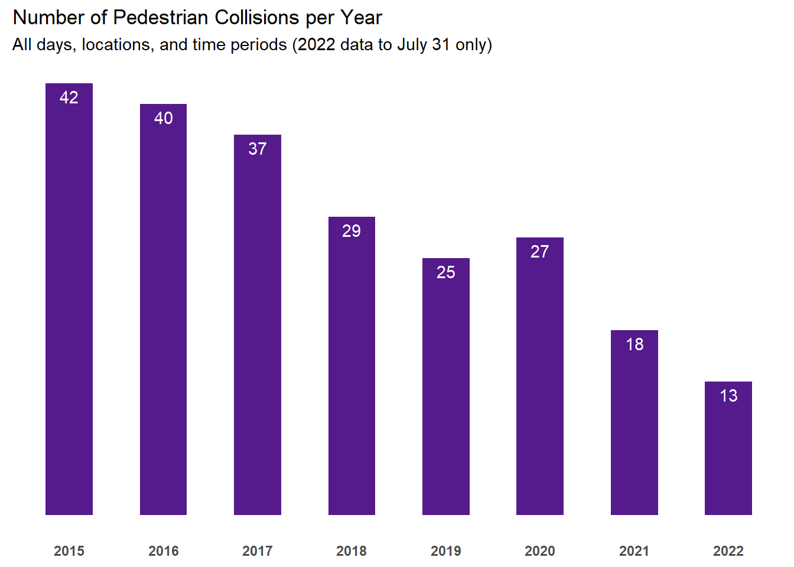
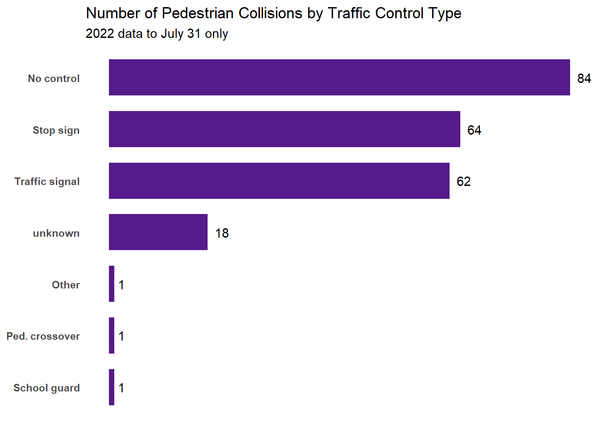

| Schools With at Least One Pedestrian Collision Within 250M | |
|---|---|
| # of Collisions | |
| John Sweeney | 4 |
| Kitchener-Waterloo Collegiate & Vocational School | 4 |
| Margaret Avenue Senior Public School | 3 |
| Williamsburg Public School | 3 |
| King Edward Public School | 2 |
| Pioneer Park Public School | 2 |
| St. Anne Kit | 2 |
| Queensmount Senior Public School | 1 |
| Saint John Paul II | 1 |
| Sandhills Public School | 1 |
| Sheppard Public School | 1 |
| St. Bernadette | 1 |
| St. Timothy | 1 |
| Sunnyside Senior Public School | 1 |
| W T Townshend Public School | 1 |
| Wilson Avenue Public School | 1 |
| Total | 29 |
Collisions Within 250m of Kitchener Schools (Jan 2015-June 2022)


| Schools With at Least One Collision of Any Kind Within 250M | ||||
|---|---|---|---|---|
| Collisions Involving Pedestrians or Cyclists Broken Out | ||||
| Pedestrians | Cyclists | Other | Total | |
| Kitchener-Waterloo Collegiate & Vocational School | 4 | 0 | 52 | 56 |
| Huron Heights Secondary School | 0 | 1 | 36 | 37 |
| Cameron Heights Collegiate Institute | 0 | 4 | 32 | 36 |
| Pioneer Park Public School | 2 | 1 | 33 | 36 |
| King Edward Public School | 2 | 0 | 28 | 30 |
| Margaret Avenue Senior Public School | 3 | 2 | 25 | 30 |
| St. Bernadette | 1 | 0 | 29 | 30 |
| Williamsburg Public School | 3 | 1 | 19 | 23 |
| Queen Elizabeth Public School | 0 | 0 | 22 | 22 |
| St. John | 0 | 0 | 21 | 21 |
| J F Carmichael Public School | 0 | 0 | 18 | 18 |
| Jean Steckle Public School | 0 | 0 | 18 | 18 |
| John Sweeney | 4 | 0 | 13 | 17 |
| St. Mary's High School | 0 | 0 | 17 | 17 |
| Westmount Public School | 0 | 1 | 16 | 17 |
| Suddaby Public School | 0 | 0 | 16 | 16 |
| St. Mark | 0 | 0 | 14 | 14 |
| St. Timothy | 1 | 0 | 13 | 14 |
| Alpine Public School | 0 | 0 | 13 | 13 |
| W T Townshend Public School | 1 | 0 | 11 | 12 |
| Glencairn Public School | 0 | 0 | 11 | 11 |
| Wilson Avenue Public School | 1 | 0 | 10 | 11 |
| Driftwood Park Public School | 0 | 0 | 10 | 10 |
| Forest Hill Public School | 0 | 0 | 10 | 10 |
| Meadowlane Public School | 0 | 0 | 10 | 10 |
| Southridge Public School | 0 | 0 | 10 | 10 |
| Smithson Public School | 0 | 1 | 8 | 9 |
| Doon Public School | 0 | 1 | 7 | 8 |
| Our Lady of Grace | 0 | 0 | 8 | 8 |
| Rockway Public School | 0 | 0 | 8 | 8 |
| Sunnyside Senior Public School | 1 | 0 | 7 | 8 |
| Brigadoon Public School | 0 | 0 | 7 | 7 |
| Courtland Senior Public School | 0 | 0 | 7 | 7 |
| Franklin Public School | 0 | 0 | 7 | 7 |
| J W Gerth Public School | 0 | 0 | 7 | 7 |
| Queensmount Senior Public School | 1 | 0 | 6 | 7 |
| Sheppard Public School | 1 | 0 | 6 | 7 |
| St. Daniel | 0 | 0 | 7 | 7 |
| Crestview Public School | 0 | 0 | 6 | 6 |
| Grand River Collegiate Institute | 0 | 0 | 6 | 6 |
| Howard Robertson Public School | 0 | 0 | 6 | 6 |
| Resurrection Catholic Secondary School | 0 | 0 | 6 | 6 |
| Rosemount School | 0 | 0 | 6 | 6 |
| Saint John Paul II | 1 | 0 | 5 | 6 |
| Stanley Park Senior Public School | 0 | 0 | 6 | 6 |
| Blessed Sacrament | 0 | 0 | 5 | 5 |
| Eastwood Collegiate Institute | 0 | 0 | 5 | 5 |
| John Darling Public School | 0 | 0 | 5 | 5 |
| Prueter Public School | 0 | 0 | 5 | 5 |
| Sandhills Public School | 1 | 0 | 4 | 5 |
| St. Aloysius | 0 | 0 | 5 | 5 |
| St. Anne Kit | 2 | 0 | 3 | 5 |
| St. Paul | 0 | 0 | 5 | 5 |
| St. Teresa Kitchener | 0 | 0 | 5 | 5 |
| Trillium Public School | 0 | 0 | 5 | 5 |
| Bridgeport Public School | 0 | 0 | 4 | 4 |
| Country Hills Public School | 0 | 0 | 4 | 4 |
| Lackner Woods Public School | 0 | 0 | 4 | 4 |
| St. Kateri Tekakwitha | 0 | 0 | 4 | 4 |
| Westheights Public School | 0 | 0 | 4 | 4 |
| Groh Public School | 0 | 0 | 3 | 3 |
| Hillside Public School | 0 | 1 | 2 | 3 |
| Huron Natural Area Outdoor Environmental Education Centre | 0 | 0 | 3 | 3 |
| St. Dominic Savio | 0 | 0 | 3 | 3 |
| Canadian Martyrs | 0 | 0 | 2 | 2 |
| Chicopee Hills Public School | 0 | 0 | 2 | 2 |
| Forest Heights Collegiate Institute | 0 | 0 | 2 | 2 |
| Laurentian Senior Public School | 0 | 0 | 2 | 2 |
| Mackenzie King Public School | 0 | 1 | 1 | 2 |
| Monsignor R.M. Haller | 0 | 0 | 2 | 2 |
| Total | 29 | 14 | 722 | 765 |
| Collisions by Time Period and Type of Day | |||||||
|---|---|---|---|---|---|---|---|
# of collisions
|
% of collisions
|
||||||
| Pedestrians | Cyclists | Other | Total | Pedestrians | Cyclists | Other | |
| 12AM - 6AM | |||||||
| Lockdown School Day | 0 | 0 | 1 | 1 | 0.0% | 0.0% | 100.0% |
| Non-School Day | 0 | 0 | 40 | 40 | 0.0% | 0.0% | 100.0% |
| Regular School Day | 1 | 1 | 29 | 31 | 3.2% | 3.2% | 93.5% |
| 6AM - 12PM | |||||||
| Lockdown School Day | 0 | 2 | 14 | 16 | 0.0% | 12.5% | 87.5% |
| Non-School Day | 2 | 1 | 105 | 108 | 1.9% | 0.9% | 97.2% |
| Regular School Day | 11 | 4 | 314 | 329 | 3.3% | 1.2% | 95.4% |
| 12PM - 6PM | |||||||
| Lockdown School Day | 0 | 0 | 21 | 21 | 0.0% | 0.0% | 100.0% |
| Non-School Day | 4 | 2 | 200 | 206 | 1.9% | 1.0% | 97.1% |
| Regular School Day | 17 | 8 | 350 | 375 | 4.5% | 2.1% | 93.3% |
| 6PM - 12AM | |||||||
| Lockdown School Day | 0 | 0 | 14 | 14 | 0.0% | 0.0% | 100.0% |
| Non-School Day | 7 | 3 | 101 | 111 | 6.3% | 2.7% | 91.0% |
| Regular School Day | 8 | 4 | 146 | 158 | 5.1% | 2.5% | 92.4% |
| Collisions per Day | ||||
|---|---|---|---|---|
| Pedestrians | Cyclists | Other | Total | |
| 12AM - 6AM | ||||
| Lockdown School Day | 0.000 | 0.000 | 0.006 | 0.006 |
| Non-School Day | 0.000 | 0.000 | 0.036 | 0.036 |
| Regular School Day | 0.001 | 0.001 | 0.020 | 0.021 |
| 6AM - 12PM | ||||
| Lockdown School Day | 0.000 | 0.012 | 0.082 | 0.094 |
| Non-School Day | 0.002 | 0.001 | 0.093 | 0.096 |
| Regular School Day | 0.007 | 0.003 | 0.213 | 0.223 |
| 12PM - 6PM | ||||
| Lockdown School Day | 0.000 | 0.000 | 0.124 | 0.124 |
| Non-School Day | 0.004 | 0.002 | 0.178 | 0.183 |
| Regular School Day | 0.012 | 0.005 | 0.237 | 0.254 |
| 6PM - 12AM | ||||
| Lockdown School Day | 0.000 | 0.000 | 0.082 | 0.082 |
| Non-School Day | 0.006 | 0.003 | 0.090 | 0.099 |
| Regular School Day | 0.005 | 0.003 | 0.099 | 0.107 |
| Collisions by School Proximity and Time Period | |||||||
|---|---|---|---|---|---|---|---|
# of collisions
|
% of collisions
|
||||||
| Pedestrians | Cyclists | Other | Total | Pedestrians | Cyclists | Other | |
| Within 250M of School | |||||||
| 12AM - 6AM | 1 | 1 | 29 | 31 | 3.2% | 3.2% | 93.5% |
| 6AM - 12PM | 11 | 4 | 314 | 329 | 3.3% | 1.2% | 95.4% |
| 12PM - 6PM | 17 | 8 | 350 | 375 | 4.5% | 2.1% | 93.3% |
| 6PM - 12AM | 8 | 4 | 146 | 158 | 5.1% | 2.5% | 92.4% |
| Beyond 250M from School | |||||||
| 12AM - 6AM | 3 | 1 | 164 | 168 | 1.8% | 0.6% | 97.6% |
| 6AM - 12PM | 38 | 24 | 1397 | 1459 | 2.6% | 1.6% | 95.8% |
| 12PM - 6PM | 48 | 39 | 1906 | 1993 | 2.4% | 2.0% | 95.6% |
| 6PM - 12AM | 36 | 13 | 840 | 889 | 4.0% | 1.5% | 94.5% |
| Collisions per Day | ||||
|---|---|---|---|---|
| Pedestrians | Cyclists | Other | Total | |
| Within 250M of School | ||||
| 12AM - 6AM | 0.00 | 0.00 | 0.02 | 0.02 |
| 6AM - 12PM | 0.01 | 0.00 | 0.21 | 0.22 |
| 12PM - 6PM | 0.01 | 0.01 | 0.24 | 0.25 |
| 6PM - 12AM | 0.01 | 0.00 | 0.10 | 0.11 |
| Beyond 250M from School | ||||
| 12AM - 6AM | 0.00 | 0.00 | 0.11 | 0.11 |
| 6AM - 12PM | 0.03 | 0.02 | 0.95 | 0.99 |
| 12PM - 6PM | 0.03 | 0.03 | 1.29 | 1.35 |
| 6PM - 12AM | 0.02 | 0.01 | 0.57 | 0.60 |


The interactive map below reports the types and number of collisions that took place on a school day between 6AM and 6PM within 250m of schools in Kitchener. Hover over a bubble to see the school name and click on it to see collision details. A bubble with a number indicates multiple underlying schools. Click on it to zoom in and see bubbles for the individual schools.